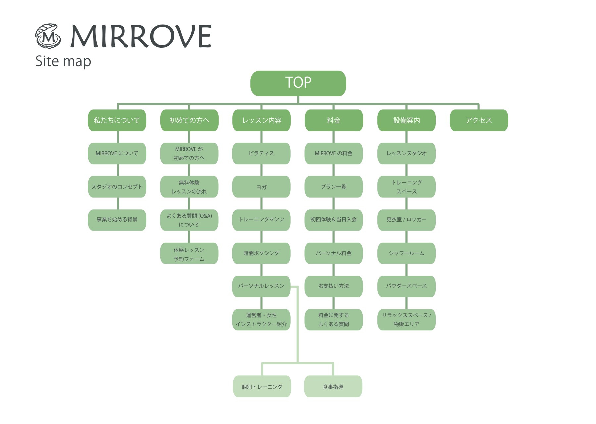
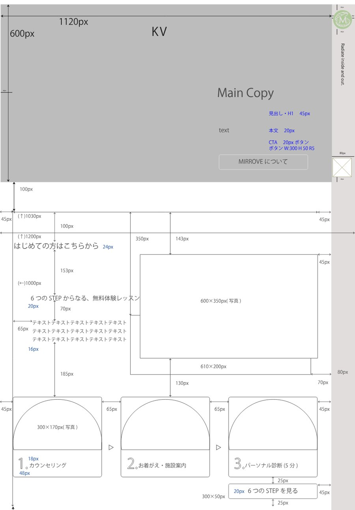
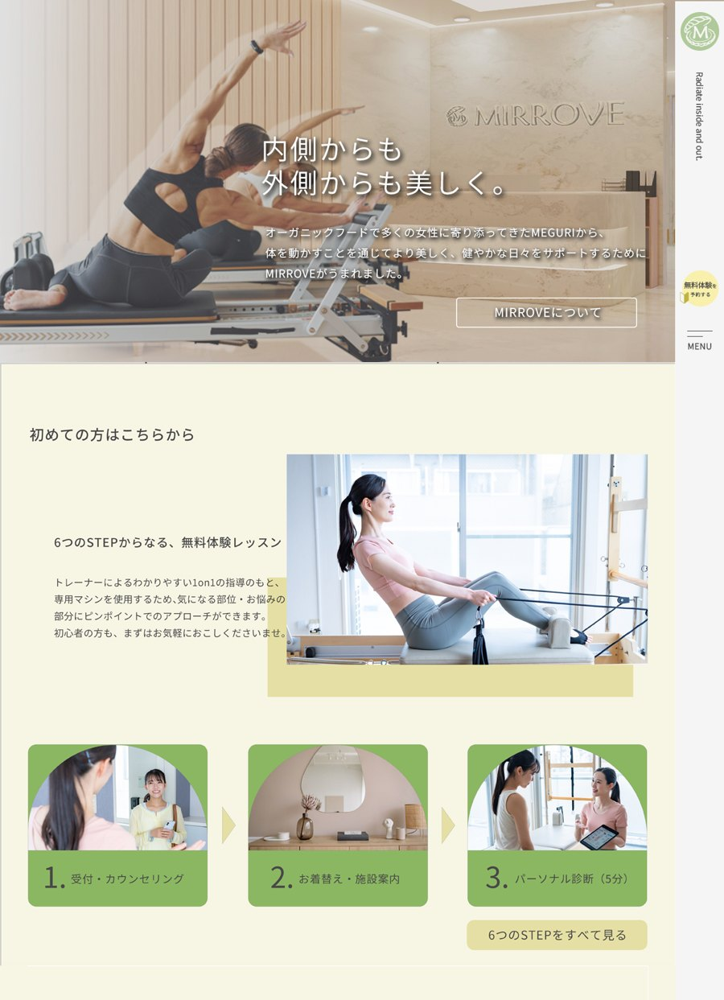
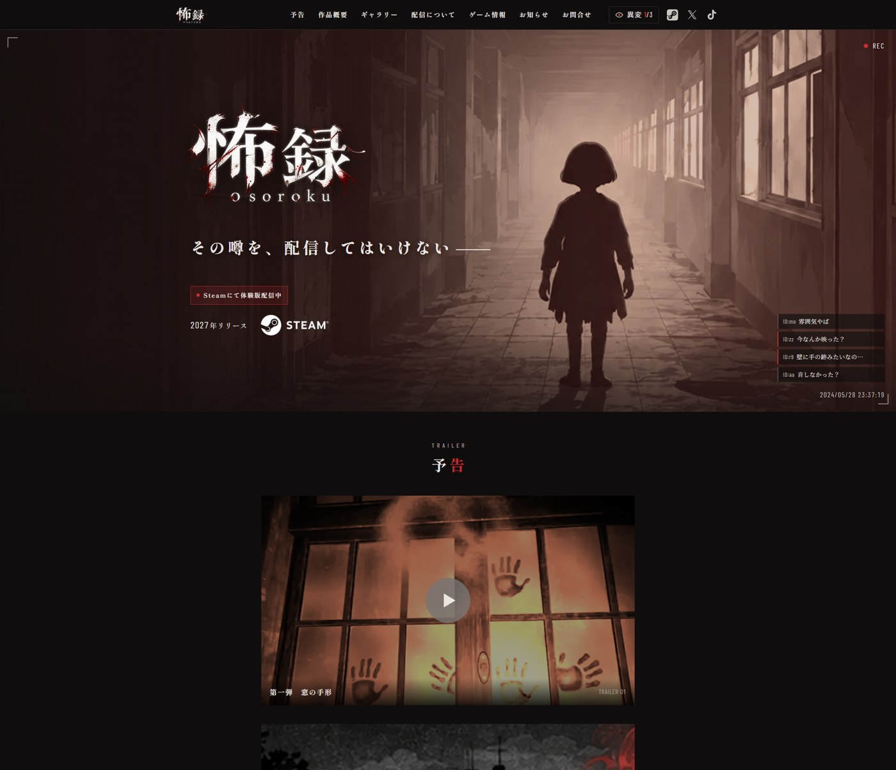
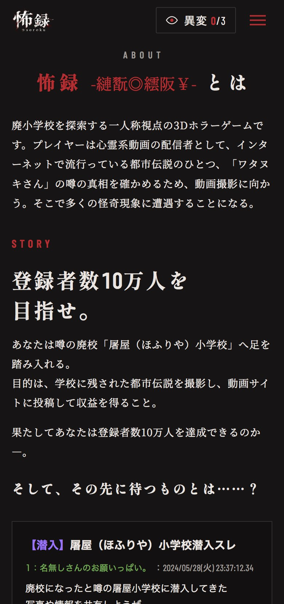
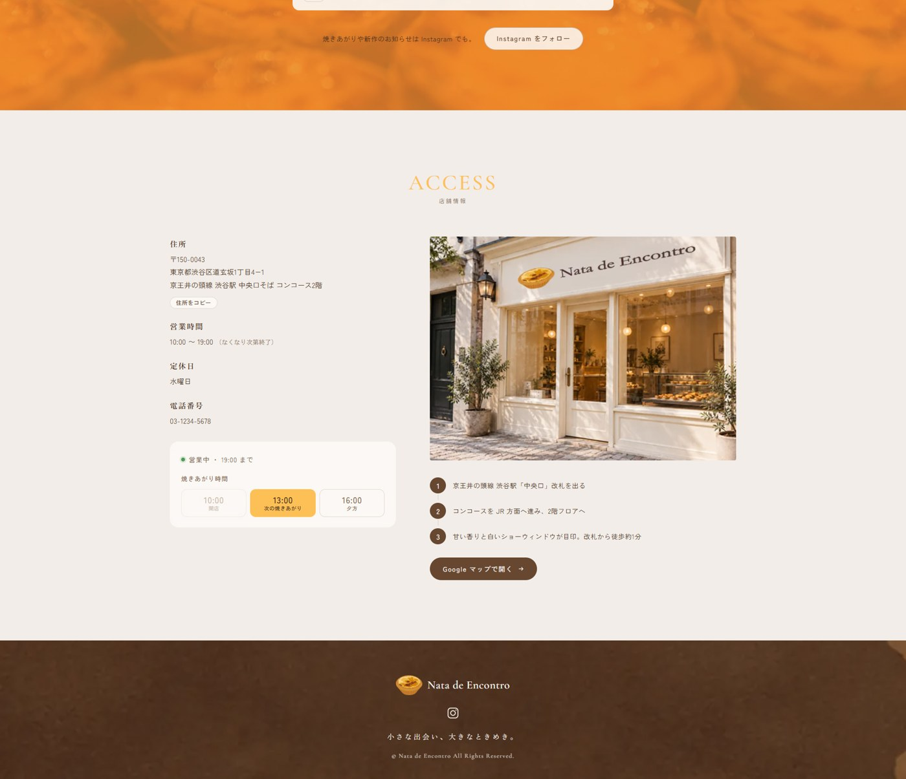
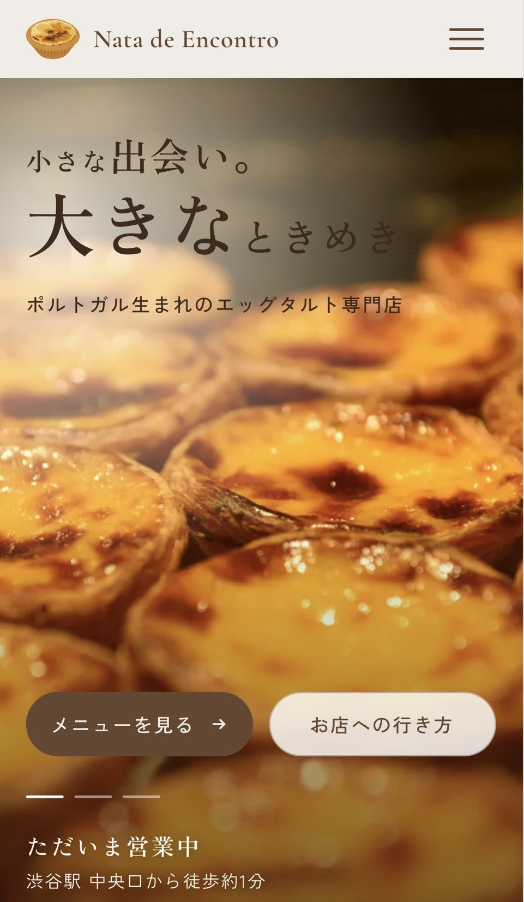

Webサイト制作
誰に、何を、どう届けるか。
そこからサイトを組み立てる。
職業訓練で制作した3つのWebサイトについて、コンセプト、ターゲット、伝えたいこと、情報設計の考え方をまとめました。あわせて、担当範囲と、制作の中で迷ったこと・学んだことを掲載しています。
内側からも、外側からも、美しく。
Conceptコンセプト
オーガニック食品や美容・健康食品を扱ってきた企業が、フィットネス事業に参入するという設定。運動と食事の両面から女性の美と健康を支えるスタジオとして、公式サイトを5名のチームで制作しました。
Whoだれに
美容や健康への関心が高い、恵比寿周辺の20〜50代の女性。年代ごとに3人のペルソナを立て、「自分に合う運動がわからない」「体験で勧誘されないか不安」など、サイトで確かめたいことを洗い出しました。
Whatなにを
食事と運動を組み合わせ、自分に合った方法で美しく健康になれること。女性インストラクターのみで、身体や食生活の悩みを相談しやすいことを伝えます。
Howどう届けるか
TOPは「知る・興味を持つ・選ぶ」、下層は「比較する・不安を解消する・予約を決める」と役割を分けました。TOPでは各ページの概要と写真だけを見せ、体験予約のボタンを追従表示にして、どこからでも予約へ進めるようにしています。



Role担当
- サイトマップの作成、コンセプトシートのとりまとめ
- TOP：2カラム構成・キービジュアルエリア・アクセス・フッターのワイヤーフレームとデザイン
- 下層：ヘッダー・フッター・「私たちについて」のワイヤーフレームとデザイン
- TOP・About Usページのコーディング
- ヘッダー・フッター・ボタン・余白・文字サイズなど、全ページの共通ルールの統一
- メンバーの進捗確認と技術的なサポート、表示不具合の原因調査
Support｜表示不具合の原因調査
Lessonページで画面幅を超える横スクロールが発生。固定幅の要素に余白指定が重なり、表示領域を超えていることを確認し、親要素の最大幅と子要素の幅指定を見直す修正方針を整理して共有しました。
迷ったこと
5人で制作する中で、メンバーごとのスキルや進行速度に違いがあり、デザインの統一とスケジュール管理をどう両立するか。
学んだこと
共通ルールの整備や進捗確認に加え、メンバーそれぞれの得意・不得意を把握し、課題に応じて協力することが、チーム全体の品質と進行を支えると学びました。
ホラーの世界観から、作品への興味を広げる。
Conceptコンセプト
ホラーゲーム『怖録』の認知拡大を目的に、権利元企業から制作許可を得て自主制作したファンサイトです。サイト用のオリジナルKVを制作し、PC・SPサイトと広告まで一貫して展開しました。
Whoだれに
SNSや動画、広告をきっかけに初めて『怖録』を知る人。ゲームを「遊ぶ人」、実況を「見る人」、配信で「届ける人」まで含めて想定しました。
Whatなにを
既存の公式サイトは情報が並列に置かれ、作品ならではの世界観が伝わりにくい状態でした。初めて見る人に、短い時間で世界観と魅力を伝えることを目指しました。
Howどう届けるか
KVで世界観を印象づけ、PVで雰囲気を具体的に伝えてから、作品概要・配信情報・ゲーム情報へ進む順番に組み直しました。黒を基調に、赤は見出しと重要な情報だけに絞って視線を集めています。


Role担当
- 企画／KV制作／PC・SPデザイン／コーディング／Twitch広告（個人制作）
迷ったこと
数多くのホラーゲームの中から興味を持ってもらい、Steamの作品ページへ誘導するには、どのようなサイト体験が必要か。
学んだこと
サイトそのものに「異変を見つける」体験を組み込むことで、見るだけのサイトから、作品の世界観を自ら確かめたくなるサイトへと発展させる考え方を学びました。
小さな出会いから、また訪れたくなるお店へ。
Conceptコンセプト
「Nata＝クリーム」「Encontro＝出会い」に由来する、架空のエッグタルト専門店。「小さな出会い、大きなときめき。」を軸に、ブランドサイトとInstagram広告を制作しました。
Whoだれに
焼き菓子やスイーツが好きで、SNSや検索、口コミから新しい店を見つける人。来店前に商品や店舗情報を確かめるユーザーを中心に想定しました。
Whatなにを
新しいブランドで、まだ認知の接点がない状態。焼き色や断面、パイ生地とクリームの食感を写真で伝え、「おいしそう」という興味を来店検討につなげることを目指しました。
Howどう届けるか
「何のお店？」から、ブランドへの共感、商品への期待、店舗情報へと、初めての人が抱く疑問の順に情報を配置。最初は説明を抑えて写真を大きく見せ、スクロールするほど具体的な情報になる構成にしました。


Role担当
- 企画／ロゴ／デザイン／コーディング／Instagram広告（個人制作）
迷ったこと
商品を「おいしそう」と感じてもらうだけで終わらせず、商品選びから来店までつなげるには、情報をどの順番で見せるべきか。
学んだこと
初めて訪れる店への「どれを選べばいいか」「今から行けるか」という2つの迷いに着目し、商品情報と店舗情報を整理することで、出会いから来店検討までを支える情報設計の大切さを学びました。